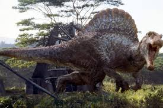

Spinozaur to jeden z najbardziej charakterystycznych i fascynujących dinozaurów kredy, żyjący około 112-93 miliony lat temu, głównie na terenach dzisiejszej Afryki Północnej. Jego nazwa pochodzi od charakterystycznego grzebienia w kształcie żagla na grzbiecie, który był formowany przez wydłużone wyrostki kręgów. Spinozaur był jednym z największych drapieżników swoich czasów, osiągając długość nawet do 15 metrów i wagę przekraczającą kilka ton.  Jedną z najbardziej rozpoznawalnych cech Spinozaura był jego długi, smukły pysk, który wykazywał podobieństwa do pyska krokodyla. To sugeruje, że Spinozaur mógł prowadzić wodny tryb życia, polując na ryby i inne organizmy wodne. Ponadto, analizy jego szkieletu wskazują na to, że mógł być również zdolny do poruszania się po lądzie, co czyniłoby go drapieżnikiem wszechstronnym, polującym zarówno na lądzie, jak i w wodzie. Spinozaur był również tematem wielu kontrowersji i dyskusji wśród paleontologów. Niektóre badania sugerują, że mógł być on głównie rybożerny, podczas gdy inne wskazują na to, że polował także na duże dinozaury roślinożerne, takie jak sauropody. Pomimo tych niejasności, Spinozaur pozostaje jednym z najbardziej tajemniczych i fascynujących dinozaurów, którego skamieniałości dostarczają niezwykle cennych informacji na temat prehistorycznej przyrody i ewolucji.

Adres: Zwoleń Radosna 26-700
Kontakt: nr. 797 715 111
email: jurrasicpark@gmail.com
Godziny otwarcia